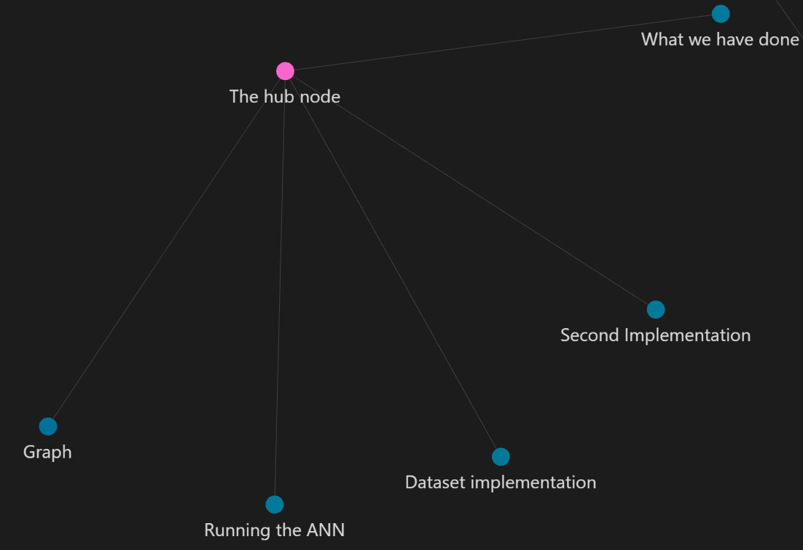

From Journaling to PKM: My Journey to Digital Ownership
12 years ago I started having the desire to write and note every significant moment happening in my life. I wrote about my day, my dreams, and even stories from my imagination. As I grew up, I started getting interested in Computer Science, art, and creative hobbies. I would write about them and study them deeply.
3 years ago I started using Notion. It was pretty good, though not always that functional for my workflow, and it needed a Pro subscription to unlock the premium features. But I still remember the joy I had using it and the work I've done on it, especially how much it helped me manage my things using Notion notes.
Why I Switched: My Linux Era and Data Control
The first time I started using Obsidian was very special to me, but things changed when I got interested in Linux, particularly when I started using Arch Linux a year ago. The reason is simple: Obsidian is substantially more secure and private than Notion. For me, when I started using Arch, having full control over my data and privacy became an important priority for me.
Does Obsidian Offer Better Security?
The answer would be a big YES, and that's because it offers three main things:
- Zero-Trust Storage Model
- True E2EE (End-to-End Encryption)
- No Vendor Lock-in or AI Scraping Concerns
Well, to explain these points and make them clear:
Zero-Trust Storage Model: Obsidian stores everything locally on your filesystem. Unlike Notion, which holds the keys to your data on AWS servers, there is less reliance on a centralized server to access your notes. This means that if a service suffers a server breach or an employee goes rogue, your local vault itself isn't sitting on their servers waiting to be accessed.
True E2EE: It works like this: if you choose to sync across devices, Obsidian Sync uses client-side AES-256 E2EE . This means even Obsidian's own developers cannot decrypt your vault contents. On the other hand, Notion doesn't offer zero-knowledge E2EE.
No AI Scraping Concerns: And that's simply because Obsidian notes are just .md files. Well, what does that mean? It means that you can read, parse, or move them using core Unix utilities such as grep, awk, find, or git.
Because your notes are ordinary Markdown files, you can search through thousands of notes using simple commands, write scripts to process your own data, track changes with Git, move your entire knowledge base to another application, or simply open the files with a text editor. Your notes aren't trapped inside some special database format that only one company understands.
How Obsidian Works
As we talked about, Obsidian is a system built around local plain-text Markdown notes, which is the best feature in my opinion. It means you own your files completely and they sit in a standard folder on your drive. If Obsidian disappeared tomorrow, your notes would still be fully readable by any simple text reader.
Obsidian also turns your knowledge base into an interconnected network:

The primary components are:
- Markdown Notes: Clean, plain-text formatting that keeps your writing future-proof, fast, and easily portable.
- Local Files: Your data remains entirely in your hands, stored on your hard drive, fully functional offline, and secured by your own system.
- Links Between Notes: This is so unique in my opinion because you can connect files to each other and maintain relationships between files that share the same content or context.
- Other Components: We still have other components such as Backlinks, Graph View, which is my favourite, Tags, Properties, Plugins, and Themes.
Plugins I Use
Excalidraw: The best one in my opinion. As a Computer Science student, it helps me a lot with my system designs. If I have a project I am working on, I can use it to design the whole system of the project and also bring ideas to life by sketching them.
Iconize: It's perfect for designing and adding icons to anything in Obsidian, including files, folders, and text.
Emoji Shortcut: As I am writing, sometimes I would love to add an emoji, but I can't go through a browser and search for it. This plugin makes the process of finding an emoji quick by writing :Emojiname, which saves a lot of time.
I also use Ninja Cursor, Pretty Properties, Dataview, and a few others to keep my workspace interactive.
My Minimalist Approach to Styling Obsidian
Personally, I use custom themes and careful design choices, as I don't use custom CSS to avoid complexity and make things as simple as possible. Over the last year, here is how I styled my Obsidian vault and made it beautiful.
One Year of Building My Second Brain
Using Obsidian for one year was like building a second brain brick by brick until the whole picture suddenly clicked.
I remember the nights I stayed up noting and studying with Obsidian, and the mornings at university using Obsidian to take notes for my Database and Neural Network classes. Everything I create has a place in my Obsidian vault. The projects, the ideas, even the future plans. Everything related to my self-improvement should be noted and studied, and Obsidian is the right place for that.
The Mistake That Taught Me the Most
I had a different vault that was holding the notes for one of my projects. One day, while I was saving and moving data around, I accidentally deleted the whole vault, and that was heartbreaking. But I didn't give up on using Obsidian. That mistake happened because I didn't know much about how to sync my vault, update new notes, and protect it from getting destroyed.
So I would say before you dive deep into Obsidian, learn how to use it safely. I have a special technique for learning new things that I used when learning Obsidian, which is to make a test environment and do anything you can do in it. Play with buttons, settings, and plugins instead of doing it in your original vault. This way, you will learn a lot and prevent your original vault from getting destroyed like what happened to me.
💡 A Quick Note
Now at this point I can say Obsidian is not a note-taking app anymore for me. It has become a lifestyle, a hobby, and my favourite daily space.
Is Obsidian Really Worth It?
The answer would definitely be yes, and the reason will be: read my article to know. My article may not cover all the features of Obsidian, and there are also some things I didn't go into, but if you care about security and securing your valuable data, Obsidian is worth it.
Obsidian is going to be your personal space to express your feelings, note your projects, study your topics, or even plan for your future. This whole article was also written in my Obsidian vault, and I loved being able to share it on my articles page.
Obsidian might not be the right choice for you if you just want extremely simple notes and don't care about linking. If you are someone who hates customization and loves simplicity, Obsidian isn't the right choice for you.